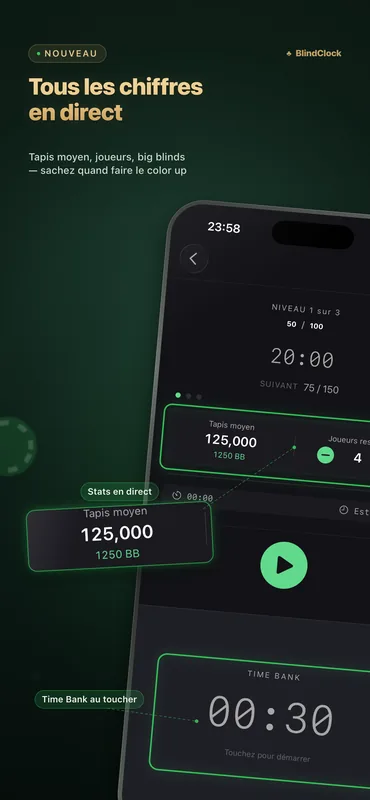
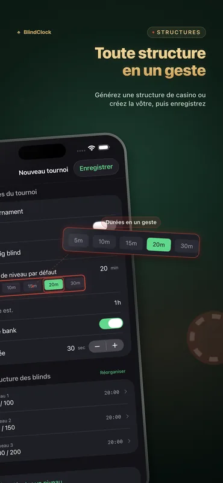
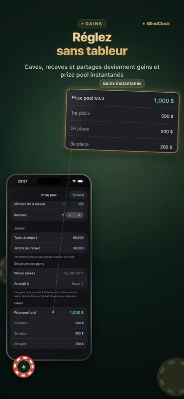

Tout ce dont un organisateur a besoin
Conçue pour les parties entre amis et les tournois de club — précise écran éteint, lisible d’un bout à l’autre de la table.
Minuteur de tournoi précis
Mettez en pause, reprenez ou passez des niveaux. L’horloge reste précise en arrière-plan et survit à une fermeture forcée — reprenez exactement là où vous en étiez.
Générateur de structure de blinds
Indiquez le nombre de joueurs, les jetons et la durée visée — obtenez en un geste une structure soignée façon casino, pauses incluses.
Calculateur de répartition des gains
Buy-ins, rebuys et partage des gains calculés sur le moment — réglez les comptes en fin de soirée sans tableur.
Time bank
Accordez aux joueurs du temps de réflexion supplémentaire grâce à des time banks paramétrables, avec avertissements et sons.
Live Activity & Dynamic Island
Le niveau en cours s’affiche sur votre écran verrouillé et dans la Dynamic Island. Sur un iPhone en charge, StandBy le transforme en horloge de tournoi plein écran.
Affichage table sur iPad
Passez un iPad en mode paysage pour un compte à rebours géant avec les blinds de chaque côté — toute la table le lit d’un coup d’œil, et l’écran reste allumé.
Partage de modèles
Exportez n’importe quel tournoi sous forme de fichier .blindclock et envoyez-le par AirDrop à un ami — il importe votre structure exacte en un geste.
Synchronisation iCloud
Vos modèles de tournoi vous suivent automatiquement sur iPhone et iPad — gratuit pour tout le monde.
L’app en images



Exemples de structures de blinds
À quoi ressemble une structure propre : un turbo se termine en 1 h 30 environ, une partie standard entre amis en 3 h, un deepstack en 4 h 30 ou plus. Le générateur de BlindClock en construit une pour votre nombre exact de joueurs, vos jetons et la durée visée, en un geste.
| Niveau | Turbo · 15 min | Standard · 20 min | Deepstack · 30 min |
|---|---|---|---|
| 1 | 25 / 50 | 25 / 50 | 25 / 50 |
| 2 | 50 / 100 | 50 / 100 | 50 / 100 |
| 3 | 100 / 200 | 75 / 150 | 75 / 150 |
| 4 | 200 / 400 | 100 / 200 | 100 / 200 |
| 5 | 300 / 600 | 150 / 300 | 150 / 300 |
| 6 | 500 / 1000 | 200 / 400 | 200 / 400 |
| 7 | — | 300 / 600 | 250 / 500 |
| 8 | — | 400 / 800 | 300 / 600 |
| 9 | — | 500 / 1000 | 400 / 800 |
| Tapis de départ | 5,000 | 5,000 | 10,000 |
Blinds indiquées en petite blinde / grosse blinde. Prévoyez une pause de 10 minutes tous les quatre ou cinq niveaux — le générateur de BlindClock les place automatiquement.
Guide complet (en anglais) : organiser un tournoi de poker à la maison →
Nouveautés de la 2.1
- Statistiques de table en direct — le tapis moyen, les joueurs restants et le tapis moyen en grosses blindes, mis à jour à chaque niveau — directement sur l’horloge.
- Sachez quand faire le color up — le chiffre que les organisateurs sérieux surveillent : quand faire le color up, quand parler d’un deal, à quel rythme avance vraiment le tournoi. Touchez pour éliminer un joueur. Gratuit pour tous.
- Lancement plus rapide & finitions — un écran de lancement repensé et des finitions dans toute l’app.
BlindClock Pro
La version gratuite est entièrement jouable — minuteur, Live Activity, générateur, répartition des gains, synchronisation et jusqu’à 5 tournois personnalisés. Pro supprime la limite en un seul achat, pour toujours, sur tous vos appareils.
- Tournois personnalisés illimités
- Achat unique
- Sans pub, sans abonnement
- Tous vos appareils